European News Dashboard
Daily view
Last update: 28 May 2026, 19:35 CEST
🇮🇹 Italy — 28 May 2026
Updated: 28 May 2026, 19:35 CESTWordcloud
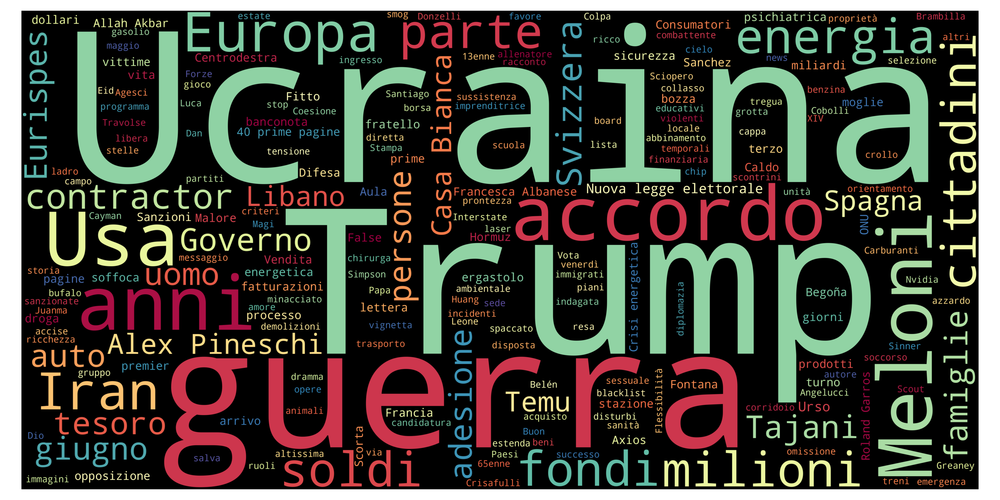
Top 10 unigrams
| Term | Frequency |
|---|---|
| ucraina | 10 |
| trump | 9 |
| guerra | 6 |
| accordo | 6 |
| anno | 6 |
| meloni | 6 |
| usa | 6 |
| europa | 6 |
| iran | 5 |
| energia | 4 |
Top 10 phrases
| Term | Frequency |
|---|---|
| alex pineschi | 3 |
| casa bianca | 3 |
| legge elettorale | 3 |
| roland garros | 2 |
| prime pagine | 2 |
| francesca albanese | 2 |
| allah akbar | 2 |
| crisi energetica | 2 |
Top 10 new terms (not present on previous day)
| Term | Current day frequency |
|---|---|
| cittadino | 4 |
| contractor | 4 |
| milione | 4 |
| svizzera | 4 |
| energia | 4 |
| parte | 4 |
| eurispes | 3 |
| tesoro | 3 |
| famiglia | 3 |
| casa bianca | 3 |
Top 10 increasing terms (vs previous day)
| Term | Difference | Current day frequency | Previous day frequency |
|---|---|---|---|
| ucraina | 7 | 10 | 3 |
| trump | 6 | 9 | 3 |
| europa | 4 | 6 | 2 |
| meloni | 3 | 6 | 3 |
| fondo | 3 | 4 | 1 |
| auto | 2 | 3 | 1 |
| accordo | 2 | 6 | 4 |
| anno | 2 | 6 | 4 |
| usa | 2 | 6 | 4 |
| guerra | 1 | 6 | 5 |
Top 10 decreasing terms (vs previous day)
| Term | Difference | Current day frequency | Previous day frequency |
|---|---|---|---|
| sede | -4 | 1 | 5 |
| ebola | -3 | 1 | 4 |
| caso | -2 | 1 | 3 |
| pronto | -2 | 1 | 3 |
| primo | -2 | 2 | 4 |
| rischio | -2 | 1 | 3 |
| grotta | -2 | 1 | 3 |
| spagna | -2 | 3 | 5 |
| giugno | -2 | 3 | 5 |
| immagine | -1 | 1 | 2 |
🇬🇧 UK — 28 May 2026
Updated: 28 May 2026, 19:35 CESTWordcloud
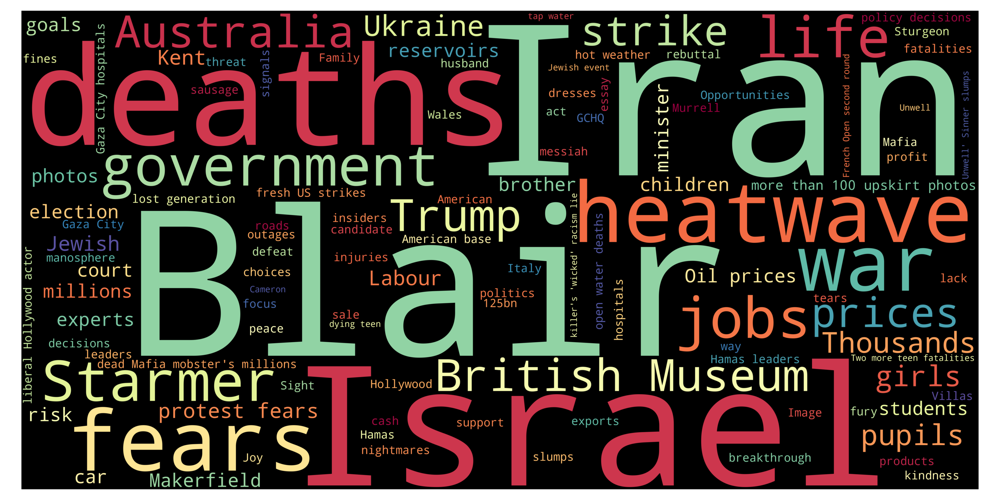
Top 10 unigrams
| Term | Frequency |
|---|---|
| iran | 10 |
| blair | 9 |
| israel | 7 |
| death | 6 |
| heatwave | 6 |
| fear | 6 |
| war | 5 |
| government | 5 |
| job | 5 |
| life | 5 |
Top 10 phrases
| Term | Frequency |
|---|---|
| british museum | 5 |
| protest fears | 4 |
| oil prices | 3 |
| upskirt photos | 3 |
| lost generation | 2 |
| fresh us strikes | 2 |
| american base | 2 |
| policy decisions | 2 |
| dead mafia mobster millions | 2 |
| liberal hollywood actor | 2 |
Top 10 new terms (not present on previous day)
| Term | Current day frequency |
|---|---|
| australia | 5 |
| war | 5 |
| british museum | 5 |
| kent | 4 |
| protest fears | 4 |
| pupil | 4 |
| jewish | 4 |
| strike | 4 |
| oil prices | 3 |
| reservoir | 3 |
Top 10 increasing terms (vs previous day)
| Term | Difference | Current day frequency | Previous day frequency |
|---|---|---|---|
| fear | 5 | 6 | 1 |
| government | 4 | 5 | 1 |
| job | 4 | 5 | 1 |
| iran | 3 | 10 | 7 |
| thousand | 3 | 4 | 1 |
| price | 3 | 4 | 1 |
| starmer | 2 | 5 | 3 |
| car | 2 | 3 | 1 |
| blair | 2 | 9 | 7 |
| photo | 2 | 3 | 1 |
Top 10 decreasing terms (vs previous day)
| Term | Difference | Current day frequency | Previous day frequency |
|---|---|---|---|
| heatwave | -7 | 6 | 13 |
| russian | -5 | 2 | 7 |
| family | -4 | 2 | 6 |
| time | -4 | 1 | 5 |
| court | -3 | 3 | 6 |
| soldier | -2 | 1 | 3 |
| wales | -2 | 2 | 4 |
| rise | -2 | 1 | 3 |
| boy | -2 | 1 | 3 |
| jeffrey donaldson | -1 | 2 | 3 |
🇮🇹 Italy — 27 May 2026
Updated: 28 May 2026, 19:35 CESTWordcloud
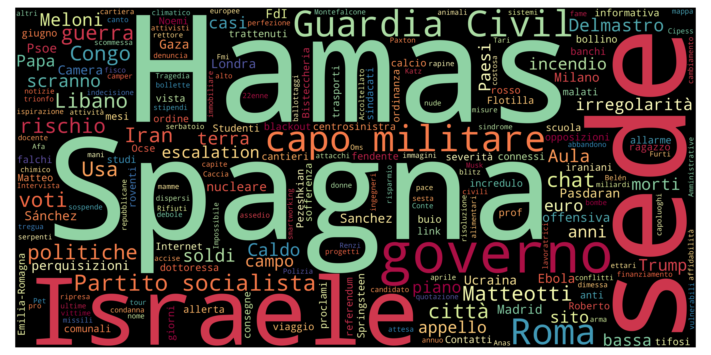
Top 10 unigrams
| Term | Frequency |
|---|---|
| roma | 6 |
| iran | 6 |
| guerra | 5 |
| giugno | 5 |
| chat | 5 |
| sede | 5 |
| hamas | 5 |
| spagna | 5 |
| adesione | 4 |
| primo | 4 |
Top 10 phrases
| Term | Frequency |
|---|---|
| partito socialista | 5 |
| legge elettorale | 4 |
| capo militare | 3 |
| guardia civil | 3 |
| primi capitoli | 2 |
| robert kennedy jr | 2 |
| mani nude | 2 |
| ponte sullo stretto | 2 |
| difesa aerea | 2 |
Top 10 new terms (not present on previous day)
| Term | Current day frequency |
|---|---|
| roma | 6 |
| partito socialista | 5 |
| hamas | 5 |
| sede | 5 |
| chat | 5 |
| legge elettorale | 4 |
| adesione | 4 |
| texas | 4 |
| laos | 4 |
| camera | 4 |
Top 10 increasing terms (vs previous day)
| Term | Difference | Current day frequency | Previous day frequency |
|---|---|---|---|
| giugno | 4 | 5 | 1 |
| accordo | 3 | 4 | 1 |
| ebola | 3 | 4 | 1 |
| caso | 2 | 3 | 1 |
| guerra | 2 | 5 | 3 |
| primo | 2 | 4 | 2 |
| spagna | 2 | 5 | 3 |
| mano | 2 | 3 | 1 |
| città | 1 | 2 | 1 |
| opposizione | 1 | 3 | 2 |
Top 10 decreasing terms (vs previous day)
| Term | Difference | Current day frequency | Previous day frequency |
|---|---|---|---|
| meloni | -7 | 3 | 10 |
| morto | -7 | 2 | 9 |
| centrodestra | -4 | 1 | 5 |
| europa | -4 | 2 | 6 |
| zapatero | -3 | 1 | 4 |
| m5s | -2 | 1 | 3 |
| burocrazia | -2 | 1 | 3 |
| iran | -2 | 6 | 8 |
| drone | -1 | 1 | 2 |
| giro | -1 | 1 | 2 |
🇬🇧 UK — 27 May 2026
Updated: 28 May 2026, 19:35 CESTWordcloud
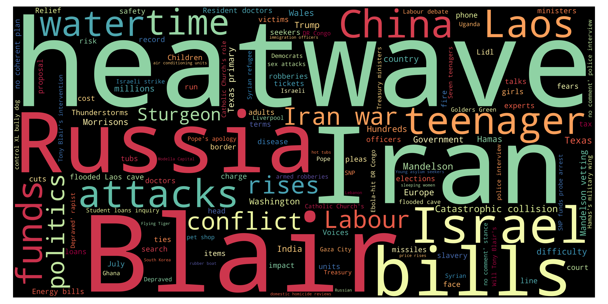
Top 10 unigrams
| Term | Frequency |
|---|---|
| heatwave | 13 |
| russia | 8 |
| attack | 7 |
| blair | 7 |
| iran | 7 |
| russian | 7 |
| family | 6 |
| doctor | 6 |
| court | 6 |
| trump | 6 |
Top 10 phrases
| Term | Frequency |
|---|---|
| resident doctors | 6 |
| ukraine war | 4 |
| starmer arson | 4 |
| beautiful soul | 3 |
| laos cave | 3 |
| catastrophic collision | 3 |
| jeffrey donaldson | 3 |
| four strike | 3 |
| mandelson vetting | 3 |
| spy chief | 3 |
Top 10 new terms (not present on previous day)
| Term | Current day frequency |
|---|---|
| attack | 7 |
| blair | 7 |
| resident doctors | 6 |
| court | 6 |
| doctor | 6 |
| israel | 6 |
| laos | 5 |
| starmer arson | 4 |
| ukraine war | 4 |
| loan | 4 |
Top 10 increasing terms (vs previous day)
| Term | Difference | Current day frequency | Previous day frequency |
|---|---|---|---|
| heatwave | 7 | 13 | 6 |
| russia | 6 | 8 | 2 |
| russian | 5 | 7 | 2 |
| china | 4 | 6 | 2 |
| trump | 4 | 6 | 2 |
| life | 3 | 4 | 1 |
| ukraine | 3 | 5 | 2 |
| time | 2 | 5 | 3 |
| bill | 2 | 4 | 2 |
| rise | 2 | 3 | 1 |
Top 10 decreasing terms (vs previous day)
| Term | Difference | Current day frequency | Previous day frequency |
|---|---|---|---|
| medium | -6 | 1 | 7 |
| iran | -4 | 7 | 11 |
| teenager | -3 | 2 | 5 |
| country | -3 | 1 | 4 |
| channel | -3 | 1 | 4 |
| death | -3 | 4 | 7 |
| right | -2 | 1 | 3 |
| election | -2 | 1 | 3 |
| labour | -2 | 3 | 5 |
| migrant | -2 | 2 | 4 |
🇮🇹 Italy — 26 May 2026
Updated: 28 May 2026, 19:35 CESTWordcloud
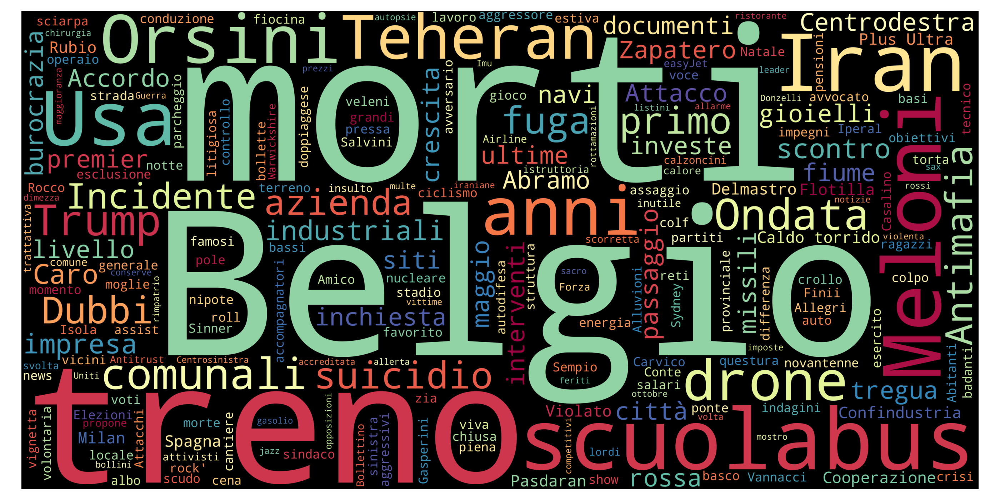
Top 10 unigrams
| Term | Frequency |
|---|---|
| meloni | 10 |
| morto | 9 |
| belgio | 8 |
| iran | 8 |
| treno | 7 |
| scuolabus | 7 |
| confindustria | 7 |
| europa | 6 |
| anno | 5 |
| centrodestra | 5 |
Top 10 phrases
| Term | Frequency |
|---|---|
| roland garros | 2 |
| plus ultra | 2 |
| caldo torrido | 2 |
| mila euro | 2 |
| cantiere comune | 2 |
Top 10 new terms (not present on previous day)
| Term | Current day frequency |
|---|---|
| belgio | 8 |
| scuolabus | 7 |
| confindustria | 7 |
| treno | 7 |
| europa | 6 |
| libano | 4 |
| zapatero | 4 |
| ondata | 4 |
| israele | 4 |
| nucleare | 3 |
Top 10 increasing terms (vs previous day)
| Term | Difference | Current day frequency | Previous day frequency |
|---|---|---|---|
| meloni | 9 | 10 | 1 |
| morto | 3 | 9 | 6 |
| teheran | 2 | 3 | 1 |
| dubbio | 2 | 3 | 1 |
| sindaco | 2 | 3 | 1 |
| aperto | 1 | 2 | 1 |
| operazione | 1 | 2 | 1 |
| anno | 1 | 5 | 4 |
| inchiesta | 1 | 2 | 1 |
| fiume | 1 | 2 | 1 |
Top 10 decreasing terms (vs previous day)
| Term | Difference | Current day frequency | Previous day frequency |
|---|---|---|---|
| venezia | -5 | 3 | 8 |
| centrodestra | -3 | 5 | 8 |
| vittoria | -2 | 1 | 3 |
| caso | -2 | 1 | 3 |
| comunali | -2 | 1 | 3 |
| ebola | -1 | 1 | 2 |
| rete | -1 | 1 | 2 |
| milione | -1 | 1 | 2 |
| diplomatico | -1 | 1 | 2 |
| fretta | -1 | 1 | 2 |
🇬🇧 UK — 26 May 2026
Updated: 28 May 2026, 19:35 CESTWordcloud
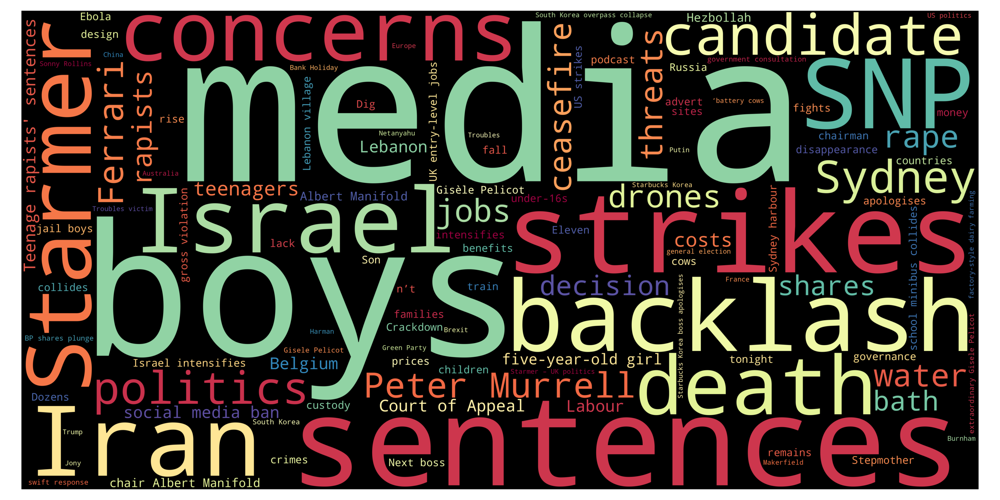
Top 10 unigrams
| Term | Frequency |
|---|---|
| iran | 11 |
| medium | 7 |
| death | 7 |
| heatwave | 6 |
| snp | 6 |
| ceasefire | 5 |
| strike | 5 |
| teenager | 5 |
| labour | 5 |
| sentence | 4 |
Top 10 phrases
| Term | Frequency |
|---|---|
| bank holiday | 4 |
| peter murrell | 4 |
| us strikes | 3 |
| court of appeal | 3 |
| western europe | 3 |
| five old girl | 3 |
| house party | 3 |
| gross violation | 2 |
| almost migrants | 2 |
| innocent bystander | 2 |
Top 10 new terms (not present on previous day)
| Term | Current day frequency |
|---|---|
| death | 7 |
| ceasefire | 5 |
| parent | 4 |
| family | 4 |
| migrant | 4 |
| channel | 4 |
| blackout | 4 |
| bank holiday | 4 |
| five old girl | 3 |
| house party | 3 |
Top 10 increasing terms (vs previous day)
| Term | Difference | Current day frequency | Previous day frequency |
|---|---|---|---|
| medium | 6 | 7 | 1 |
| heatwave | 5 | 6 | 1 |
| teenager | 4 | 5 | 1 |
| labour | 3 | 5 | 2 |
| country | 3 | 4 | 1 |
| sentence | 3 | 4 | 1 |
| water | 3 | 4 | 1 |
| strike | 3 | 5 | 2 |
| election | 2 | 3 | 1 |
| cost | 1 | 2 | 1 |
Top 10 decreasing terms (vs previous day)
| Term | Difference | Current day frequency | Previous day frequency |
|---|---|---|---|
| peter murrell | -3 | 4 | 7 |
| russian | -3 | 2 | 5 |
| heat | -2 | 1 | 3 |
| question | -2 | 1 | 3 |
| price | -2 | 1 | 3 |
| china | -2 | 2 | 4 |
| line | -1 | 1 | 2 |
| russia | -1 | 2 | 3 |
| tourist | -1 | 1 | 2 |
| custody | -1 | 2 | 3 |
🇮🇹 Italy — 25 May 2026
Updated: 28 May 2026, 19:35 CESTWordcloud
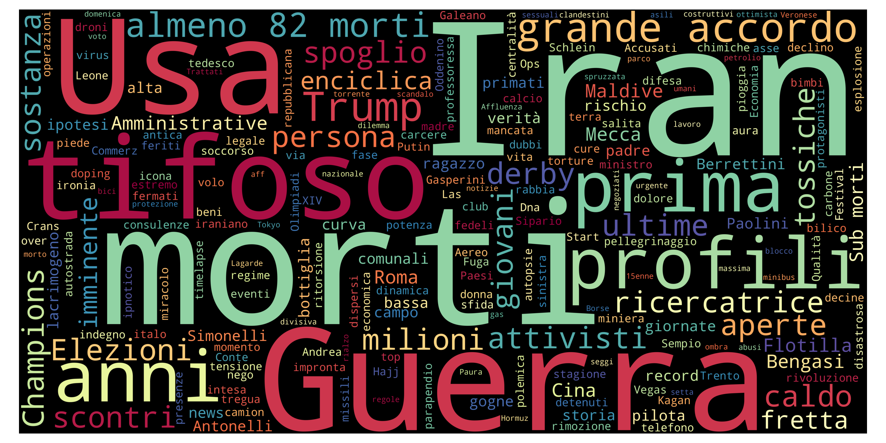
Top 10 unigrams
| Term | Frequency |
|---|---|
| iran | 9 |
| centrodestra | 8 |
| venezia | 8 |
| morto | 6 |
| salerno | 5 |
| guerra | 4 |
| tifoso | 4 |
| anno | 4 |
| uganda | 4 |
| maldive | 4 |
Top 10 phrases
| Term | Frequency |
|---|---|
| reggio calabria | 5 |
| de luca | 3 |
| primo turno | 3 |
| almeno morti | 3 |
| responsabilità civile | 3 |
| università di genova | 2 |
| sub morti | 2 |
| grande accordo | 2 |
| iran usa | 2 |
Top 10 new terms (not present on previous day)
| Term | Current day frequency |
|---|---|
| salerno | 5 |
| uganda | 4 |
| tifoso | 4 |
| comunali | 3 |
| de luca | 3 |
| vittoria | 3 |
| centrosinistra | 3 |
| attivista | 3 |
| responsabilità civile | 3 |
| caso | 3 |
Top 10 increasing terms (vs previous day)
| Term | Difference | Current day frequency | Previous day frequency |
|---|---|---|---|
| centrodestra | 7 | 8 | 1 |
| venezia | 5 | 8 | 3 |
| reggio calabria | 3 | 5 | 2 |
| autopsia | 2 | 3 | 1 |
| maldive | 2 | 4 | 2 |
| negoziato | 1 | 2 | 1 |
| positivo | 1 | 2 | 1 |
| rete | 1 | 2 | 1 |
| diplomatico | 1 | 2 | 1 |
| decina | 1 | 2 | 1 |
Top 10 decreasing terms (vs previous day)
| Term | Difference | Current day frequency | Previous day frequency |
|---|---|---|---|
| trump | -9 | 3 | 12 |
| usa | -3 | 2 | 5 |
| voto | -2 | 1 | 3 |
| ferito | -2 | 1 | 3 |
| guerra | -2 | 4 | 6 |
| affluenza | -2 | 1 | 3 |
| ebola | -1 | 2 | 3 |
| news | -1 | 1 | 2 |
| immersione | -1 | 1 | 2 |
| notizia | -1 | 1 | 2 |
🇬🇧 UK — 25 May 2026
Updated: 28 May 2026, 19:35 CESTWordcloud
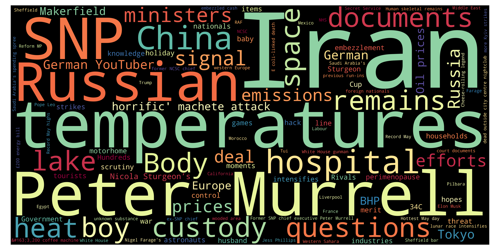
Top 10 unigrams
| Term | Frequency |
|---|---|
| iran | 11 |
| temperature | 7 |
| snp | 6 |
| russian | 5 |
| hospital | 4 |
| china | 4 |
| custody | 3 |
| question | 3 |
| document | 3 |
| body | 3 |
Top 10 phrases
| Term | Frequency |
|---|---|
| peter murrell | 7 |
| german youtuber | 3 |
| horrific machete attack | 3 |
| oil prices | 3 |
| nicola sturgeons | 3 |
| former snp chief executive peter murrell | 2 |
| hottest may | 2 |
| sheffield bar | 2 |
| previous run ins | 2 |
| white house gunman | 2 |
Top 10 new terms (not present on previous day)
| Term | Current day frequency |
|---|---|
| peter murrell | 7 |
| snp | 6 |
| hospital | 4 |
| tokyo | 3 |
| lake | 3 |
| document | 3 |
| makerfield | 3 |
| body | 3 |
| nicola sturgeons | 3 |
| german youtuber | 3 |
Top 10 increasing terms (vs previous day)
| Term | Difference | Current day frequency | Previous day frequency |
|---|---|---|---|
| temperature | 4 | 7 | 3 |
| minister | 2 | 3 | 1 |
| remain | 2 | 3 | 1 |
| china | 2 | 4 | 2 |
| holiday | 1 | 2 | 1 |
| government | 1 | 2 | 1 |
| russia | 1 | 3 | 2 |
| europe | 1 | 3 | 2 |
| moment | 1 | 2 | 1 |
Top 10 decreasing terms (vs previous day)
| Term | Difference | Current day frequency | Previous day frequency |
|---|---|---|---|
| trump | -5 | 2 | 7 |
| fire | -5 | 1 | 6 |
| jail | -4 | 1 | 5 |
| white house | -3 | 2 | 5 |
| boy | -2 | 3 | 5 |
| girl | -2 | 1 | 3 |
| clothe | -1 | 1 | 2 |
| kill | -1 | 1 | 2 |
| blast | -1 | 1 | 2 |
| child | -1 | 1 | 2 |
🇮🇹 Italy — 24 May 2026
Updated: 28 May 2026, 19:35 CESTWordcloud
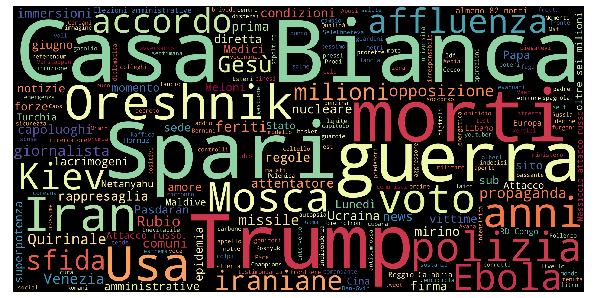
Top 10 unigrams
| Term | Frequency |
|---|---|
| trump | 12 |
| iran | 10 |
| morto | 7 |
| spari | 7 |
| guerra | 6 |
| oreshnik | 5 |
| usa | 5 |
| accordo | 4 |
| anno | 4 |
| polizia | 4 |
Top 10 phrases
| Term | Frequency |
|---|---|
| casa bianca | 13 |
| oltre milioni | 2 |
| almeno morti | 2 |
| rd congo | 2 |
| massiccio attacco russo | 2 |
| elezioni amministrative | 2 |
| legge elettorale | 2 |
| reggio calabria | 2 |
Top 10 new terms (not present on previous day)
| Term | Current day frequency |
|---|---|
| casa bianca | 13 |
| spari | 7 |
| usa | 5 |
| mosca | 4 |
| opposizione | 4 |
| polizia | 4 |
| affluenza | 3 |
| spare | 3 |
| gesù | 3 |
| netanyahu | 3 |
Top 10 increasing terms (vs previous day)
| Term | Difference | Current day frequency | Previous day frequency |
|---|---|---|---|
| trump | 10 | 12 | 2 |
| iran | 3 | 10 | 7 |
| oreshnik | 3 | 5 | 2 |
| anno | 3 | 4 | 1 |
| guerra | 3 | 6 | 3 |
| milione | 2 | 3 | 1 |
| ebola | 2 | 3 | 1 |
| voto | 2 | 3 | 1 |
| missile | 2 | 3 | 1 |
| sfida | 2 | 3 | 1 |
Top 10 decreasing terms (vs previous day)
| Term | Difference | Current day frequency | Previous day frequency |
|---|---|---|---|
| cina | -6 | 2 | 8 |
| carbone | -5 | 1 | 6 |
| presidente | -2 | 1 | 3 |
| meloni | -1 | 2 | 3 |
| aperto | -1 | 1 | 2 |
| zelensky | -1 | 1 | 2 |
| euro | -1 | 1 | 2 |
| disperso | -1 | 1 | 2 |
| morto | -1 | 7 | 8 |
| lunedì | -1 | 2 | 3 |
🇬🇧 UK — 24 May 2026
Updated: 28 May 2026, 19:35 CESTWordcloud
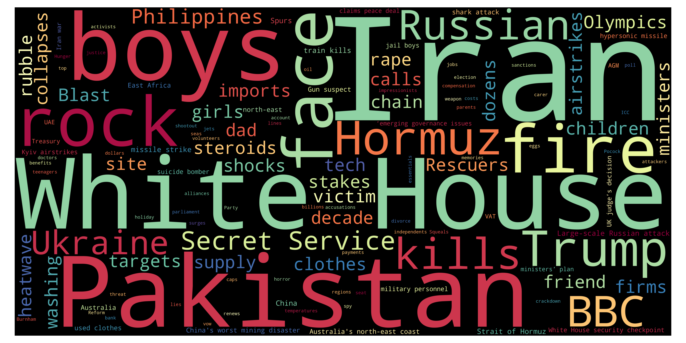
Top 10 unigrams
| Term | Frequency |
|---|---|
| iran | 11 |
| trump | 7 |
| fire | 6 |
| boy | 5 |
| parent | 5 |
| jail | 5 |
| russian | 5 |
| ukraine | 5 |
| pakistan | 5 |
| bbc | 4 |
Top 10 phrases
| Term | Frequency |
|---|---|
| white house | 5 |
| secret service | 3 |
| police investigation | 3 |
| rape victim | 2 |
| large scale russian attack | 2 |
| turkish riot police storm opposition offices | 2 |
| train kills | 2 |
| strait of hormuz | 2 |
| missile strike | 2 |
| law change | 2 |
Top 10 new terms (not present on previous day)
| Term | Current day frequency |
|---|---|
| white house | 5 |
| jail | 5 |
| pakistan | 5 |
| russian | 5 |
| parent | 5 |
| bbc | 4 |
| police investigation | 3 |
| court | 3 |
| japan | 3 |
| secret service | 3 |
Top 10 increasing terms (vs previous day)
| Term | Difference | Current day frequency | Previous day frequency |
|---|---|---|---|
| iran | 7 | 11 | 4 |
| fire | 5 | 6 | 1 |
| boy | 4 | 5 | 1 |
| ukraine | 3 | 5 | 2 |
| trump | 2 | 7 | 5 |
| temperature | 2 | 3 | 1 |
| child | 1 | 2 | 1 |
| defendant | 1 | 2 | 1 |
| bedroom | 1 | 2 | 1 |
| friend | 1 | 2 | 1 |
Top 10 decreasing terms (vs previous day)
| Term | Difference | Current day frequency | Previous day frequency |
|---|---|---|---|
| job | -2 | 1 | 3 |
| benefit | -2 | 1 | 3 |
| city | -1 | 1 | 2 |
| starmer | -1 | 1 | 2 |
| family | -1 | 1 | 2 |
| volunteer | -1 | 1 | 2 |
| win | -1 | 1 | 2 |
🇮🇹 Italy — 23 May 2026
Updated: 28 May 2026, 19:35 CESTWordcloud
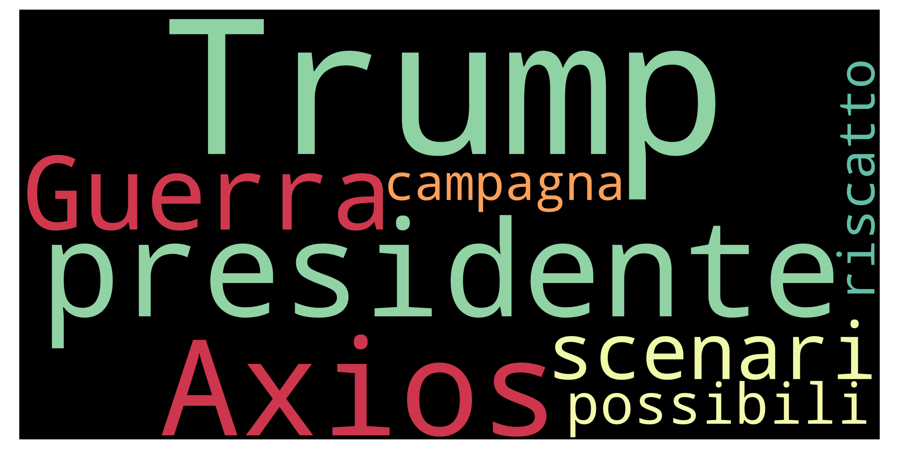
Top 10 unigrams
| Term | Frequency |
|---|---|
| miniera | 8 |
| morto | 8 |
| cina | 8 |
| iran | 7 |
| carbone | 6 |
| esplosione | 5 |
| strage | 4 |
| accordo | 4 |
| raid | 4 |
| presidente | 3 |
Top 10 phrases
| Term | Frequency |
|---|---|
| almeno morti | 3 |
| salario giusto | 2 |
| debito comune | 2 |
| terra dei fuochi | 2 |
Top 10 new terms (not present on previous day)
| Term | Current day frequency |
|---|---|
| cina | 8 |
| miniera | 8 |
| carbone | 6 |
| esplosione | 5 |
| strage | 4 |
| lacrima | 3 |
| capaci | 3 |
| attacco | 3 |
| almeno morti | 3 |
| segno | 2 |
Top 10 increasing terms (vs previous day)
| Term | Difference | Current day frequency | Previous day frequency |
|---|---|---|---|
| iran | 5 | 7 | 2 |
| raid | 3 | 4 | 1 |
| presidente | 2 | 3 | 1 |
| accordo | 2 | 4 | 2 |
| governo | 2 | 3 | 1 |
| lunedì | 2 | 3 | 1 |
| disperso | 1 | 2 | 1 |
| volo | 1 | 2 | 1 |
| dombrovskis | 1 | 2 | 1 |
| storia | 1 | 3 | 2 |
Top 10 decreasing terms (vs previous day)
| Term | Difference | Current day frequency | Previous day frequency |
|---|---|---|---|
| flotilla | -7 | 2 | 9 |
| maldive | -4 | 2 | 6 |
| trump | -4 | 2 | 6 |
| putin | -3 | 1 | 4 |
| primo | -2 | 1 | 3 |
| francia | -2 | 3 | 5 |
| progresso | -1 | 1 | 2 |
| meloni | -1 | 3 | 4 |
| intesa | -1 | 1 | 2 |
| anno | -1 | 1 | 2 |
🇬🇧 UK — 23 May 2026
Updated: 28 May 2026, 19:35 CESTWordcloud
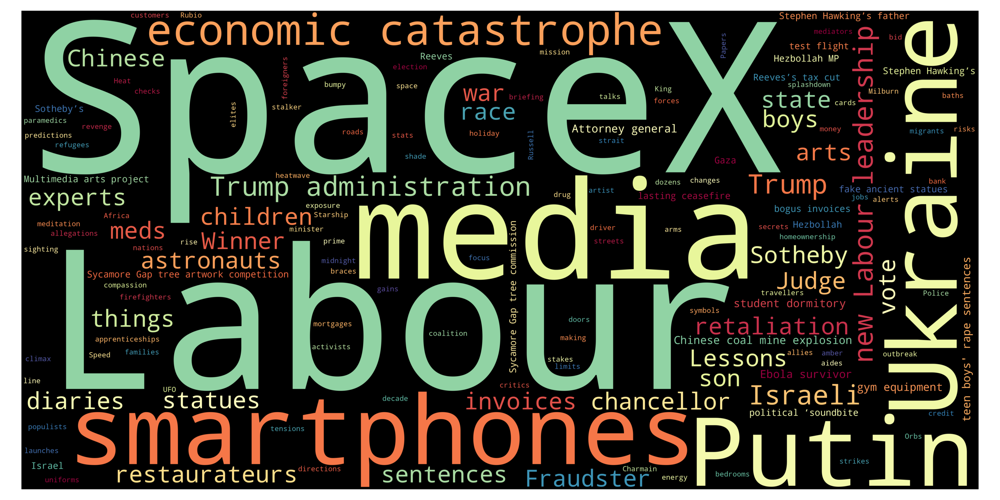
Top 10 unigrams
| Term | Frequency |
|---|---|
| trump | 5 |
| check | 4 |
| refugee | 4 |
| france | 4 |
| dover | 4 |
| iran | 4 |
| french | 4 |
| israeli | 4 |
| spacex | 4 |
| benefit | 3 |
Top 10 phrases
| Term | Frequency |
|---|---|
| eu border checks | 4 |
| dr congo | 3 |
| economic catastrophe | 3 |
| french mum | 2 |
| masked gang raid | 2 |
| red cross volunteers | 2 |
| red cross | 2 |
| chinese coal mine explosion | 2 |
| champions league | 2 |
| final premier league place reaction | 2 |
Top 10 new terms (not present on previous day)
| Term | Current day frequency |
|---|---|
| refugee | 4 |
| spacex | 4 |
| dover | 4 |
| france | 4 |
| french | 4 |
| israeli | 4 |
| eu border checks | 4 |
| benefit | 3 |
| job | 3 |
| smartphone | 3 |
Top 10 increasing terms (vs previous day)
| Term | Difference | Current day frequency | Previous day frequency |
|---|---|---|---|
| traveller | 2 | 3 | 1 |
| check | 2 | 4 | 2 |
| road | 2 | 3 | 1 |
| alert | 2 | 3 | 1 |
| city | 1 | 2 | 1 |
| mediator | 1 | 2 | 1 |
| assault | 1 | 2 | 1 |
| delay | 1 | 2 | 1 |
| football | 1 | 2 | 1 |
| starmer | 1 | 2 | 1 |
Top 10 decreasing terms (vs previous day)
| Term | Difference | Current day frequency | Previous day frequency |
|---|---|---|---|
| boy | -6 | 1 | 7 |
| election | -4 | 1 | 5 |
| trump | -4 | 5 | 9 |
| medium | -3 | 1 | 4 |
| rubio | -3 | 1 | 4 |
| activist | -3 | 1 | 4 |
| labour | -2 | 3 | 5 |
| ally | -2 | 1 | 3 |
| threat | -1 | 1 | 2 |
| change | -1 | 1 | 2 |
🇮🇹 Italy — 22 May 2026
Updated: 28 May 2026, 19:35 CESTWordcloud
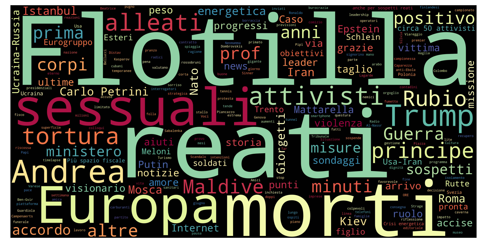
Top 10 unigrams
| Term | Frequency |
|---|---|
| flotilla | 9 |
| morto | 8 |
| reato | 7 |
| europa | 7 |
| sessuale | 6 |
| trump | 6 |
| maldive | 6 |
| attivista | 5 |
| tortura | 5 |
| andrea | 5 |
Top 10 phrases
| Term | Frequency |
|---|---|
| regno unito | 4 |
| tulsi gabbard | 3 |
| parole inaccettabili | 3 |
| crisi energetica | 3 |
| stati uniti | 2 |
| raúl castro | 2 |
| leghista piazza | 2 |
| carlo petrini | 2 |
| rd congo | 2 |
| spazio fiscale | 2 |
Top 10 new terms (not present on previous day)
| Term | Current day frequency |
|---|---|
| reato | 7 |
| sessuale | 6 |
| tortura | 5 |
| francia | 5 |
| regno unito | 4 |
| eurogruppo | 4 |
| modena | 4 |
| crisi energetica | 3 |
| parole inaccettabili | 3 |
| primo | 3 |
Top 10 increasing terms (vs previous day)
| Term | Difference | Current day frequency | Previous day frequency |
|---|---|---|---|
| europa | 5 | 7 | 2 |
| morto | 4 | 8 | 4 |
| andrea | 4 | 5 | 1 |
| trump | 4 | 6 | 2 |
| maldive | 3 | 6 | 3 |
| energetico | 3 | 4 | 1 |
| putin | 3 | 4 | 1 |
| misura | 2 | 4 | 2 |
| sub | 2 | 3 | 1 |
| roma | 1 | 3 | 2 |
Top 10 decreasing terms (vs previous day)
| Term | Difference | Current day frequency | Previous day frequency |
|---|---|---|---|
| flotilla | -9 | 9 | 18 |
| usa | -9 | 3 | 12 |
| meloni | -7 | 4 | 11 |
| governo | -4 | 1 | 5 |
| guerra | -4 | 3 | 7 |
| iran | -4 | 2 | 6 |
| allarme | -2 | 1 | 3 |
| volo | -2 | 1 | 3 |
| pressione | -2 | 1 | 3 |
| israele | -2 | 4 | 6 |
🇬🇧 UK — 22 May 2026
Updated: 28 May 2026, 19:35 CESTWordcloud
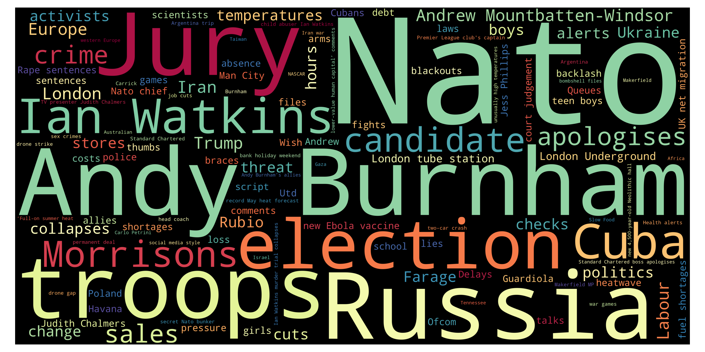
Top 10 unigrams
| Term | Frequency |
|---|---|
| trump | 9 |
| boy | 7 |
| election | 5 |
| labour | 5 |
| cup | 4 |
| scientist | 4 |
| rubio | 4 |
| politic | 4 |
| medium | 4 |
| apologise | 4 |
Top 10 phrases
| Term | Frequency |
|---|---|
| judith chalmers | 5 |
| andy burnham | 4 |
| tulsi gabbard | 3 |
| tv presenter judith chalmers | 3 |
| ebola outbreak | 3 |
| ian watkins | 3 |
| wes streeting | 3 |
| teen boys rape sentences | 2 |
| attorney general | 2 |
| ebola vaccine | 2 |
Top 10 new terms (not present on previous day)
| Term | Current day frequency |
|---|---|
| judith chalmers | 5 |
| apologise | 4 |
| candidate | 4 |
| medium | 4 |
| wish | 4 |
| nato | 4 |
| rubio | 4 |
| cup | 4 |
| politic | 4 |
| government | 4 |
Top 10 increasing terms (vs previous day)
| Term | Difference | Current day frequency | Previous day frequency |
|---|---|---|---|
| trump | 4 | 9 | 5 |
| sale | 3 | 4 | 1 |
| ally | 2 | 3 | 1 |
| site | 2 | 3 | 1 |
| pressure | 2 | 3 | 1 |
| school | 2 | 3 | 1 |
| andy burnham | 2 | 4 | 2 |
| cut | 2 | 3 | 1 |
| heatwave | 1 | 2 | 1 |
| election | 1 | 5 | 4 |
Top 10 decreasing terms (vs previous day)
| Term | Difference | Current day frequency | Previous day frequency |
|---|---|---|---|
| gaza | -5 | 2 | 7 |
| iran | -4 | 4 | 8 |
| child | -4 | 2 | 6 |
| palantir | -3 | 2 | 5 |
| starmer | -3 | 1 | 4 |
| burnham | -3 | 2 | 5 |
| temperature | -2 | 1 | 3 |
| fire | -2 | 1 | 3 |
| israel | -2 | 2 | 4 |
| girl | -2 | 2 | 4 |
🇮🇹 Italy — 21 May 2026
Updated: 28 May 2026, 19:35 CESTWordcloud
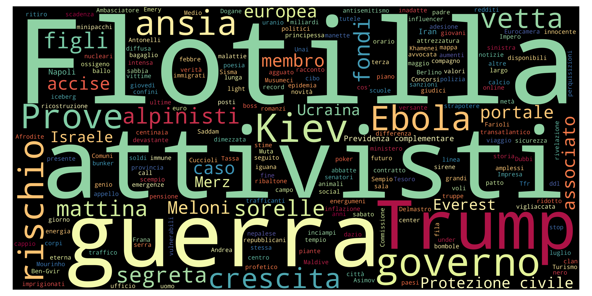
Top 10 unigrams
| Term | Frequency |
|---|---|
| flotilla | 18 |
| usa | 12 |
| meloni | 11 |
| guerra | 7 |
| caraibi | 7 |
| cuba | 7 |
| zelensky | 6 |
| ben-gvir | 6 |
| sanzione | 6 |
| iran | 6 |
Top 10 phrases
| Term | Frequency |
|---|---|
| portaerei nimitz | 4 |
| ben gvir | 4 |
| tutta attrezzatura | 2 |
| gerry hutch | 2 |
| portaerei americana | 2 |
| italia india | 2 |
| dove rò | 1 |
Top 10 new terms (not present on previous day)
| Term | Current day frequency |
|---|---|
| caraibi | 7 |
| ben-gvir | 6 |
| zelensky | 6 |
| sanzione | 6 |
| russo | 5 |
| niscemi | 4 |
| kiev | 4 |
| portaerei nimitz | 4 |
| milione | 4 |
| rubio | 4 |
Top 10 increasing terms (vs previous day)
| Term | Difference | Current day frequency | Previous day frequency |
|---|---|---|---|
| cuba | 5 | 7 | 2 |
| tajani | 3 | 5 | 2 |
| morto | 3 | 4 | 1 |
| governo | 3 | 5 | 2 |
| usa | 3 | 12 | 9 |
| flotilla | 3 | 18 | 15 |
| iran | 2 | 6 | 4 |
| ferito | 2 | 3 | 1 |
| presidente | 1 | 2 | 1 |
| follower | 1 | 2 | 1 |
Top 10 decreasing terms (vs previous day)
| Term | Difference | Current day frequency | Previous day frequency |
|---|---|---|---|
| putin | -11 | 1 | 12 |
| modi | -6 | 2 | 8 |
| israele | -6 | 6 | 12 |
| trump | -6 | 2 | 8 |
| attivista | -4 | 5 | 9 |
| guerra | -3 | 7 | 10 |
| corpo | -2 | 2 | 4 |
| ucraina | -2 | 2 | 4 |
| grotta | -2 | 2 | 4 |
| sub | -2 | 1 | 3 |
🇬🇧 UK — 21 May 2026
Updated: 28 May 2026, 19:35 CESTWordcloud
Top 10 unigrams
| Term | Frequency |
|---|---|
| iran | 8 |
| boy | 7 |
| vat | 7 |
| gaza | 7 |
| child | 6 |
| labour | 6 |
| activist | 5 |
| burnham | 5 |
| palantir | 5 |
| trump | 5 |
Top 10 phrases
| Term | Frequency |
|---|---|
| net migration | 5 |
| ebola outbreak | 4 |
| gaza flotilla activists | 3 |
| married at first sight | 3 |
| king charles | 3 |
| rachel reeves | 3 |
| raúl castro | 3 |
| living plan | 3 |
| biological sex | 2 |
| changing rooms | 2 |
Top 10 new terms (not present on previous day)
| Term | Current day frequency |
|---|---|
| boy | 7 |
| vat | 7 |
| palantir | 5 |
| net migration | 5 |
| burnham | 5 |
| ebola outbreak | 4 |
| row | 4 |
| sponsorship | 4 |
| toilet | 4 |
| tui | 4 |
Top 10 increasing terms (vs previous day)
| Term | Difference | Current day frequency | Previous day frequency |
|---|---|---|---|
| child | 5 | 6 | 1 |
| iran | 4 | 8 | 4 |
| gaza | 3 | 7 | 4 |
| girl | 3 | 4 | 1 |
| cost | 2 | 3 | 1 |
| victim | 2 | 3 | 1 |
| fire | 2 | 3 | 1 |
| election | 2 | 4 | 2 |
| drc | 2 | 3 | 1 |
| makerfield | 2 | 4 | 2 |
Top 10 decreasing terms (vs previous day)
| Term | Difference | Current day frequency | Previous day frequency |
|---|---|---|---|
| london | -4 | 2 | 6 |
| life | -4 | 2 | 6 |
| streeting | -3 | 1 | 4 |
| sanction | -3 | 2 | 5 |
| 30c | -2 | 1 | 3 |
| temperature | -2 | 3 | 5 |
| change | -2 | 1 | 3 |
| labour | -2 | 6 | 8 |
| pressure | -2 | 1 | 3 |
| israeli | -2 | 3 | 5 |
🇮🇹 Italy — 20 May 2026
Updated: 28 May 2026, 19:35 CESTWordcloud
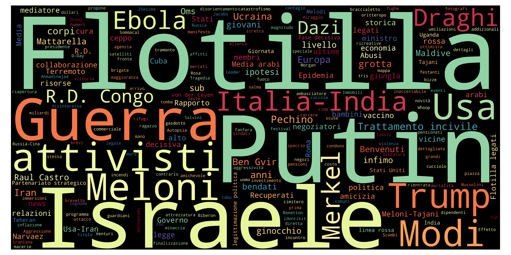
Top 10 unigrams
| Term | Frequency |
|---|---|
| flotilla | 15 |
| putin | 12 |
| israele | 12 |
| guerra | 10 |
| meloni | 10 |
| attivista | 9 |
| usa | 9 |
| trump | 8 |
| modi | 8 |
| ebola | 5 |
Top 10 phrases
| Term | Frequency |
|---|---|
| trattamento incivile | 5 |
| ben gvir | 4 |
| raul castro | 3 |
| italia india | 3 |
| r d congo | 3 |
| media arabi | 2 |
| flotilla legati | 2 |
| partenariato strategico | 2 |
| linea rossa | 2 |
| von der leyen | 2 |
Top 10 new terms (not present on previous day)
| Term | Current day frequency |
|---|---|
| meloni | 10 |
| modi | 8 |
| draghi | 5 |
| merkel | 5 |
| trattamento incivile | 5 |
| ben gvir | 4 |
| benvenuti | 3 |
| ginocchio | 3 |
| dazi | 3 |
| raul castro | 3 |
Top 10 increasing terms (vs previous day)
| Term | Difference | Current day frequency | Previous day frequency |
|---|---|---|---|
| flotilla | 8 | 15 | 7 |
| attivista | 8 | 9 | 1 |
| usa | 7 | 9 | 2 |
| guerra | 7 | 10 | 3 |
| israele | 6 | 12 | 6 |
| putin | 6 | 12 | 6 |
| pechino | 3 | 5 | 2 |
| livello | 2 | 3 | 1 |
| tajani | 1 | 2 | 1 |
| oms | 1 | 3 | 2 |
Top 10 decreasing terms (vs previous day)
| Term | Difference | Current day frequency | Previous day frequency |
|---|---|---|---|
| maldive | -4 | 3 | 7 |
| meloni-modi | -3 | 1 | 4 |
| attacco | -3 | 1 | 4 |
| speciale | -2 | 1 | 3 |
| salvini | -2 | 1 | 3 |
| morto | -2 | 1 | 3 |
| m5s | -2 | 1 | 3 |
| effetto | -2 | 1 | 3 |
| precedente | -2 | 1 | 3 |
| morte | -2 | 1 | 3 |
🇬🇧 UK — 20 May 2026
Updated: 28 May 2026, 19:35 CESTWordcloud
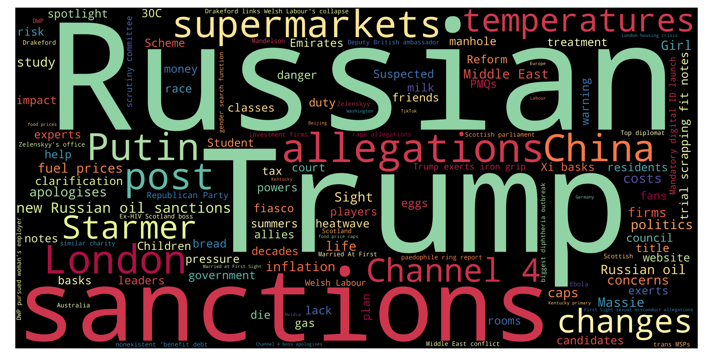
Top 10 unigrams
| Term | Frequency |
|---|---|
| russian | 9 |
| labour | 8 |
| court | 7 |
| life | 6 |
| putin | 6 |
| london | 6 |
| temperature | 5 |
| sanction | 5 |
| trump | 5 |
| israeli | 5 |
Top 10 phrases
| Term | Frequency |
|---|---|
| raf spy plane | 4 |
| assisted dying bill | 3 |
| six gulf states | 3 |
| radio station apologises | 3 |
| black sea | 2 |
| fuel duty freeze | 2 |
| labour risks | 2 |
| channel boss | 2 |
| channel 4 | 2 |
| xi chinese welcome | 2 |
Top 10 new terms (not present on previous day)
| Term | Current day frequency |
|---|---|
| sanction | 5 |
| friend | 4 |
| gaza | 4 |
| raf spy plane | 4 |
| brighton | 4 |
| israel | 4 |
| cuba | 4 |
| raf | 4 |
| wake | 3 |
| 30c | 3 |
Top 10 increasing terms (vs previous day)
| Term | Difference | Current day frequency | Previous day frequency |
|---|---|---|---|
| russian | 7 | 9 | 2 |
| court | 5 | 7 | 2 |
| life | 5 | 6 | 1 |
| putin | 4 | 6 | 2 |
| streeting | 3 | 4 | 1 |
| israeli | 3 | 5 | 2 |
| activist | 3 | 4 | 1 |
| temperature | 2 | 5 | 3 |
| apologise | 2 | 3 | 1 |
| study | 2 | 3 | 1 |
Top 10 decreasing terms (vs previous day)
| Term | Difference | Current day frequency | Previous day frequency |
|---|---|---|---|
| sight | -7 | 2 | 9 |
| iran | -5 | 4 | 9 |
| hs2 | -4 | 1 | 5 |
| allegation | -4 | 3 | 7 |
| china | -3 | 2 | 5 |
| mango | -3 | 2 | 5 |
| trump | -3 | 5 | 8 |
| andy burnham | -2 | 2 | 4 |
| election | -2 | 2 | 4 |
| victim | -1 | 1 | 2 |
🇮🇹 Italy — 19 May 2026
Updated: 28 May 2026, 19:35 CESTWordcloud

Top 10 unigrams
| Term | Frequency |
|---|---|
| trump | 9 |
| lega | 8 |
| maldive | 7 |
| flotilla | 7 |
| figlio | 6 |
| putin | 6 |
| israele | 6 |
| spesa | 5 |
| corpo | 5 |
| mango | 5 |
Top 10 phrases
| Term | Frequency |
|---|---|
| san diego | 4 |
| centro islamico | 3 |
| futuro nazionale | 3 |
| via libera | 3 |
| italia india | 3 |
| meloni modi | 3 |
| spese nato | 2 |
| disturbi psichici | 2 |
| paesi del golfo | 2 |
| casa bianca | 2 |
Top 10 new terms (not present on previous day)
| Term | Current day frequency |
|---|---|
| lega | 8 |
| figlio | 6 |
| putin | 6 |
| spesa | 5 |
| mango | 5 |
| vannacci | 4 |
| ravetto | 4 |
| padre | 4 |
| nato | 4 |
| meloni-modi | 4 |
Top 10 increasing terms (vs previous day)
| Term | Difference | Current day frequency | Previous day frequency |
|---|---|---|---|
| trump | 4 | 9 | 5 |
| anno | 3 | 4 | 1 |
| cina | 3 | 5 | 2 |
| difesa | 2 | 4 | 2 |
| giorno | 2 | 3 | 1 |
| barca | 2 | 3 | 1 |
| energia | 2 | 3 | 1 |
| ebola | 2 | 4 | 2 |
| libero | 2 | 3 | 1 |
| europa | 2 | 4 | 2 |
Top 10 decreasing terms (vs previous day)
| Term | Difference | Current day frequency | Previous day frequency |
|---|---|---|---|
| iran | -4 | 3 | 7 |
| usa | -4 | 2 | 6 |
| corpo | -3 | 5 | 8 |
| tajani | -3 | 1 | 4 |
| morto | -2 | 3 | 5 |
| modena | -2 | 3 | 5 |
| disperso | -2 | 1 | 3 |
| mercoledì | -2 | 1 | 3 |
| cura | -2 | 1 | 3 |
| flotilla | -2 | 7 | 9 |
🇬🇧 UK — 19 May 2026
Updated: 28 May 2026, 19:35 CESTWordcloud

Top 10 unigrams
| Term | Frequency |
|---|---|
| sight | 9 |
| labour | 9 |
| iran | 9 |
| trump | 8 |
| file | 7 |
| allegation | 7 |
| hs2 | 5 |
| price | 5 |
| fear | 5 |
| bill | 5 |
Top 10 phrases
| Term | Frequency |
|---|---|
| andy burnham | 4 |
| iran war | 4 |
| john swinney | 3 |
| mandelson files | 3 |
| married at | 3 |
| father death | 3 |
| rape allegations | 3 |
| energy bills | 3 |
| epstein files | 2 |
| child sex abuse allegations | 2 |
Top 10 new terms (not present on previous day)
| Term | Current day frequency |
|---|---|
| file | 7 |
| china | 5 |
| bill | 5 |
| mango | 5 |
| mandelson | 4 |
| iran war | 4 |
| investigation | 4 |
| john swinney | 3 |
| supermarket | 3 |
| rape allegations | 3 |
Top 10 increasing terms (vs previous day)
| Term | Difference | Current day frequency | Previous day frequency |
|---|---|---|---|
| labour | 6 | 9 | 3 |
| allegation | 6 | 7 | 1 |
| sight | 5 | 9 | 4 |
| hs2 | 3 | 5 | 2 |
| trump | 3 | 8 | 5 |
| fear | 3 | 5 | 2 |
| election | 2 | 4 | 2 |
| fund | 1 | 2 | 1 |
| change | 1 | 2 | 1 |
| temperature | 1 | 3 | 2 |
Top 10 decreasing terms (vs previous day)
| Term | Difference | Current day frequency | Previous day frequency |
|---|---|---|---|
| strike | -7 | 2 | 9 |
| london | -5 | 4 | 9 |
| court | -3 | 2 | 5 |
| starmer | -3 | 3 | 6 |
| andy burnham | -3 | 4 | 7 |
| drone | -2 | 1 | 3 |
| study | -2 | 1 | 3 |
| diver | -2 | 1 | 3 |
| brexit | -2 | 2 | 4 |
| drug | -2 | 1 | 3 |
🇮🇹 Italy — 18 May 2026
Updated: 28 May 2026, 19:35 CESTWordcloud

Top 10 unigrams
| Term | Frequency |
|---|---|
| flotilla | 9 |
| corpo | 8 |
| maldive | 8 |
| iran | 7 |
| usa | 6 |
| trump | 5 |
| morto | 5 |
| recupero | 5 |
| modena | 5 |
| israele | 5 |
Top 10 phrases
| Term | Frequency |
|---|---|
| stati uniti | 2 |
| rilevanza internazionale | 2 |
| emergenza internazionale | 2 |
| donne morte | 2 |
| el koudri | 2 |
| flotilla diretta | 2 |
Top 10 new terms (not present on previous day)
| Term | Current day frequency |
|---|---|
| flotilla | 9 |
| israele | 5 |
| disperso | 3 |
| nave | 3 |
| mercoledì | 3 |
| ultimo | 2 |
| fondo | 2 |
| breve | 2 |
| andalusia | 2 |
| miliardo | 2 |
Top 10 increasing terms (vs previous day)
| Term | Difference | Current day frequency | Previous day frequency |
|---|---|---|---|
| corpo | 6 | 8 | 2 |
| usa | 4 | 6 | 2 |
| recupero | 4 | 5 | 1 |
| sub | 3 | 4 | 1 |
| guerra | 2 | 3 | 1 |
| iran | 2 | 7 | 5 |
| cura | 2 | 3 | 1 |
| news | 1 | 2 | 1 |
| pace | 1 | 2 | 1 |
| primo | 1 | 2 | 1 |
Top 10 decreasing terms (vs previous day)
| Term | Difference | Current day frequency | Previous day frequency |
|---|---|---|---|
| modena | -8 | 5 | 13 |
| meloni | -6 | 4 | 10 |
| ferito | -3 | 2 | 5 |
| drone | -3 | 2 | 5 |
| auto | -2 | 1 | 3 |
| energia | -2 | 1 | 3 |
| difesa | -1 | 2 | 3 |
| finlandese | -1 | 3 | 4 |
| champions | -1 | 2 | 3 |
| cipro | -1 | 2 | 3 |
🇬🇧 UK — 18 May 2026
Updated: 28 May 2026, 19:35 CESTWordcloud

Top 10 unigrams
| Term | Frequency |
|---|---|
| strike | 9 |
| iran | 9 |
| london | 9 |
| price | 6 |
| burnham | 6 |
| starmer | 6 |
| farage | 5 |
| court | 5 |
| openai | 5 |
| trump | 5 |
Top 10 phrases
| Term | Frequency |
|---|---|
| andy burnham | 7 |
| london tube | 4 |
| london tube strikes | 4 |
| makerfield byelection | 4 |
| channel 4 | 3 |
| run brexit arguments | 2 |
| elon musks | 2 |
| sam altman | 2 |
| elon musk lawsuit | 2 |
| missing italian divers | 2 |
Top 10 new terms (not present on previous day)
| Term | Current day frequency |
|---|---|
| strike | 9 |
| andy burnham | 7 |
| price | 6 |
| openai | 5 |
| farage | 5 |
| court | 5 |
| horse | 4 |
| train | 4 |
| makerfield byelection | 4 |
| london tube strikes | 4 |
Top 10 increasing terms (vs previous day)
| Term | Difference | Current day frequency | Previous day frequency |
|---|---|---|---|
| starmer | 4 | 6 | 2 |
| iran | 4 | 9 | 5 |
| trump | 3 | 5 | 2 |
| burnham | 3 | 6 | 3 |
| risk | 3 | 4 | 1 |
| clock | 2 | 3 | 1 |
| politic | 2 | 3 | 1 |
| hour | 1 | 2 | 1 |
| country | 1 | 2 | 1 |
| temperature | 1 | 2 | 1 |
Top 10 decreasing terms (vs previous day)
| Term | Difference | Current day frequency | Previous day frequency |
|---|---|---|---|
| time | -3 | 1 | 4 |
| arrest | -3 | 1 | 4 |
| labour | -2 | 3 | 5 |
| bid | -2 | 1 | 3 |
| celtic | -2 | 2 | 4 |
| change | -1 | 1 | 2 |
| store | -1 | 2 | 3 |
| light | -1 | 1 | 2 |
| north | -1 | 1 | 2 |
| russia | -1 | 2 | 3 |
🇮🇹 Italy — 17 May 2026
Updated: 28 May 2026, 19:35 CESTWordcloud

Top 10 unigrams
| Term | Frequency |
|---|---|
| modena | 13 |
| meloni | 10 |
| maldive | 7 |
| mattarella | 6 |
| trump | 6 |
| morto | 6 |
| ferito | 5 |
| drone | 5 |
| iran | 5 |
| finlandese | 4 |
Top 10 phrases
| Term | Frequency |
|---|---|
| disagio psichiatrico | 2 |
| tempo stringe | 2 |
| daily mail | 2 |
Top 10 new terms (not present on previous day)
| Term | Current day frequency |
|---|---|
| roma | 4 |
| finlandese | 4 |
| teheran | 4 |
| champions | 3 |
| energia | 3 |
| tajani | 3 |
| cipro | 3 |
| crisi | 2 |
| centrale | 2 |
| disagio psichiatrico | 2 |
Top 10 increasing terms (vs previous day)
| Term | Difference | Current day frequency | Previous day frequency |
|---|---|---|---|
| modena | 8 | 13 | 5 |
| ferito | 4 | 5 | 1 |
| mattarella | 4 | 6 | 2 |
| drone | 4 | 5 | 1 |
| morto | 3 | 6 | 3 |
| difesa | 2 | 3 | 1 |
| auto | 2 | 3 | 1 |
| squadra | 2 | 3 | 1 |
| giro | 1 | 2 | 1 |
| eroe | 1 | 2 | 1 |
Top 10 decreasing terms (vs previous day)
| Term | Difference | Current day frequency | Previous day frequency |
|---|---|---|---|
| sub | -7 | 1 | 8 |
| maldive | -6 | 7 | 13 |
| pronto | -5 | 1 | 6 |
| corpo | -5 | 2 | 7 |
| usa | -4 | 2 | 6 |
| meloni | -3 | 10 | 13 |
| hormuz | -3 | 1 | 4 |
| iran | -2 | 5 | 7 |
| anno | -1 | 1 | 2 |
| condizione | -1 | 1 | 2 |
🇬🇧 UK — 17 May 2026
Updated: 28 May 2026, 19:35 CESTWordcloud

Top 10 unigrams
| Term | Frequency |
|---|---|
| london | 9 |
| officer | 6 |
| plan | 5 |
| iran | 5 |
| moscow | 5 |
| brexit | 5 |
| labour | 5 |
| eurovision | 4 |
| arrest | 4 |
| protest | 4 |
Top 10 phrases
| Term | Frequency |
|---|---|
| dr congo | 3 |
| scott hastings | 3 |
| rival london protests | 3 |
| labour leadership | 3 |
| police chief | 3 |
| iran war | 3 |
| dark art | 3 |
| wes streeting | 3 |
| leadership contest | 2 |
| one point | 2 |
Top 10 new terms (not present on previous day)
| Term | Current day frequency |
|---|---|
| officer | 6 |
| iran | 5 |
| plan | 5 |
| moscow | 5 |
| brexit | 5 |
| protest | 4 |
| ukraine | 4 |
| eurovision | 4 |
| olympics | 4 |
| time | 4 |
Top 10 increasing terms (vs previous day)
| Term | Difference | Current day frequency | Previous day frequency |
|---|---|---|---|
| store | 2 | 3 | 1 |
| bid | 2 | 3 | 1 |
| celtic | 2 | 4 | 2 |
| arrest | 2 | 4 | 2 |
| change | 1 | 2 | 1 |
| kingdom | 1 | 2 | 1 |
| camera | 1 | 2 | 1 |
Top 10 decreasing terms (vs previous day)
| Term | Difference | Current day frequency | Previous day frequency |
|---|---|---|---|
| trump | -7 | 2 | 9 |
| london | -4 | 9 | 13 |
| labour | -3 | 5 | 8 |
| pedestrian | -3 | 2 | 5 |
| italy | -3 | 2 | 5 |
| starmer | -2 | 2 | 4 |
| march | -2 | 2 | 4 |
| battle | -2 | 1 | 3 |
| hope | -2 | 1 | 3 |
| burnham | -2 | 3 | 5 |
🇮🇹 Italy — 16 May 2026
Updated: 28 May 2026, 19:35 CESTWordcloud

Top 10 unigrams
| Term | Frequency |
|---|---|
| meloni | 13 |
| maldive | 13 |
| sub | 8 |
| corpo | 7 |
| trump | 7 |
| iran | 7 |
| ricerca | 6 |
| pronto | 6 |
| usa | 6 |
| papa | 5 |
Top 10 phrases
| Term | Frequency |
|---|---|
| europe gulf forum | 2 |
| europe gulf forum incontri mitsotakis abela christodoulidis | 2 |
| stretto di hormuz | 2 |
| navigazione sicura | 2 |
Top 10 new terms (not present on previous day)
| Term | Current day frequency |
|---|---|
| meloni | 13 |
| sub | 8 |
| pronto | 6 |
| ricerca | 6 |
| modena | 5 |
| attacco | 4 |
| numero | 4 |
| hormuz | 4 |
| europa | 4 |
| israele | 3 |
Top 10 increasing terms (vs previous day)
| Term | Difference | Current day frequency | Previous day frequency |
|---|---|---|---|
| maldive | 6 | 13 | 7 |
| papa | 4 | 5 | 1 |
| corpo | 3 | 7 | 4 |
| mattarella | 1 | 2 | 1 |
| condizione | 1 | 2 | 1 |
| finale | 1 | 2 | 1 |
| iran | 1 | 7 | 6 |
| colloquio | 1 | 2 | 1 |
| fiducia | 1 | 2 | 1 |
| taiwan | 1 | 4 | 3 |
Top 10 decreasing terms (vs previous day)
| Term | Difference | Current day frequency | Previous day frequency |
|---|---|---|---|
| trump | -6 | 7 | 13 |
| pechino | -5 | 1 | 6 |
| anno | -5 | 2 | 7 |
| morto | -3 | 3 | 6 |
| accordo | -2 | 2 | 4 |
| futuro | -2 | 1 | 3 |
| operazione | -2 | 1 | 3 |
| difesa | -1 | 1 | 2 |
| strategico | -1 | 1 | 2 |
| giro | -1 | 1 | 2 |
🇬🇧 UK — 16 May 2026
Updated: 28 May 2026, 19:35 CESTWordcloud

Top 10 unigrams
| Term | Frequency |
|---|---|
| london | 13 |
| trump | 9 |
| labour | 8 |
| thousand | 6 |
| ten | 6 |
| pedestrian | 5 |
| soldier | 5 |
| burnham | 5 |
| italy | 5 |
| march | 4 |
Top 10 phrases
| Term | Frequency |
|---|---|
| tens thousands | 6 |
| leadership race | 4 |
| wes streeting | 4 |
| royal windsor horse | 3 |
| east london | 3 |
| maldives caves | 2 |
| rescue diver | 2 |
| trump warning | 2 |
| safe death | 2 |
| assisted dying | 2 |
Top 10 new terms (not present on previous day)
| Term | Current day frequency |
|---|---|
| thousand | 6 |
| ten | 6 |
| tens thousands | 6 |
| soldier | 5 |
| italy | 5 |
| pedestrian | 5 |
| chelsea | 4 |
| leadership race | 4 |
| march | 4 |
| alonso | 4 |
Top 10 increasing terms (vs previous day)
| Term | Difference | Current day frequency | Previous day frequency |
|---|---|---|---|
| london | 8 | 13 | 5 |
| battle | 2 | 3 | 1 |
| hope | 2 | 3 | 1 |
| italians | 1 | 3 | 2 |
| north | 1 | 2 | 1 |
| trump | 1 | 9 | 8 |
Top 10 decreasing terms (vs previous day)
| Term | Difference | Current day frequency | Previous day frequency |
|---|---|---|---|
| burnham | -8 | 5 | 13 |
| cost | -4 | 1 | 5 |
| china | -4 | 2 | 6 |
| starmer | -4 | 4 | 8 |
| andy burnham | -3 | 2 | 5 |
| talk | -3 | 1 | 4 |
| makerfield | -3 | 1 | 4 |
| assault | -3 | 1 | 4 |
| reform | -2 | 2 | 4 |
| taiwan | -2 | 2 | 4 |
🇮🇹 Italy — 15 May 2026
Updated: 28 May 2026, 19:35 CESTWordcloud

Top 10 unigrams
| Term | Frequency |
|---|---|
| trump | 13 |
| anno | 7 |
| maldive | 7 |
| morto | 6 |
| giachetti | 6 |
| pechino | 6 |
| usa | 6 |
| iran | 6 |
| cina | 5 |
| primo | 4 |
Top 10 phrases
| Term | Frequency |
|---|---|
| sub morti | 2 |
| bakari sako | 2 |
| air force one | 2 |
| sequestrate tonnellate | 2 |
| gianluca benedetti | 2 |
| vigilanza rai | 2 |
| morti maldive | 2 |
| grande risultato | 2 |
| via libera | 2 |
| italia emirati | 2 |
Top 10 new terms (not present on previous day)
| Term | Current day frequency |
|---|---|
| trump | 13 |
| morto | 6 |
| giachetti | 6 |
| corpo | 4 |
| operazione | 3 |
| maggio | 3 |
| roma | 3 |
| italia-emirato | 3 |
| putin | 3 |
| futuro | 3 |
Top 10 increasing terms (vs previous day)
| Term | Difference | Current day frequency | Previous day frequency |
|---|---|---|---|
| iran | 4 | 6 | 2 |
| anno | 3 | 7 | 4 |
| russo | 2 | 3 | 1 |
| accordo | 2 | 4 | 2 |
| primo | 2 | 4 | 2 |
| ucraina | 2 | 4 | 2 |
| raid | 1 | 2 | 1 |
| news | 1 | 2 | 1 |
| cina | 1 | 5 | 4 |
| porta | 1 | 2 | 1 |
Top 10 decreasing terms (vs previous day)
| Term | Difference | Current day frequency | Previous day frequency |
|---|---|---|---|
| trump-xi | -4 | 1 | 5 |
| maldive | -3 | 7 | 10 |
| vittima | -3 | 1 | 4 |
| profondità | -2 | 1 | 3 |
| sfida | -2 | 1 | 3 |
| draghi | -2 | 1 | 3 |
| grotta | -2 | 2 | 4 |
| governo | -2 | 2 | 4 |
| visita | -2 | 1 | 3 |
| taiwan | -2 | 3 | 5 |
🇬🇧 UK — 15 May 2026
Updated: 28 May 2026, 19:35 CESTWordcloud

Top 10 unigrams
| Term | Frequency |
|---|---|
| burnham | 13 |
| starmer | 8 |
| labour | 8 |
| trump | 8 |
| russian | 7 |
| china | 6 |
| cost | 5 |
| london | 5 |
| summit | 4 |
| farage | 4 |
Top 10 phrases
| Term | Frequency |
|---|---|
| andy burnham | 5 |
| borrowing costs | 4 |
| wes streeting | 4 |
| golders green | 4 |
| rich list | 3 |
| keir starmer | 3 |
| health secretary | 3 |
| james murray | 3 |
| zebra crossing | 3 |
| us influencer | 3 |
Top 10 new terms (not present on previous day)
| Term | Current day frequency |
|---|---|
| cost | 5 |
| maldives | 4 |
| reform | 4 |
| farage | 4 |
| talk | 4 |
| borrowing costs | 4 |
| cia | 3 |
| golders green stabbings | 3 |
| rich list | 3 |
| health secretary | 3 |
Top 10 increasing terms (vs previous day)
| Term | Difference | Current day frequency | Previous day frequency |
|---|---|---|---|
| burnham | 5 | 13 | 8 |
| russian | 4 | 7 | 3 |
| london | 3 | 5 | 2 |
| assault | 3 | 4 | 1 |
| house | 3 | 4 | 1 |
| summit | 3 | 4 | 1 |
| eurovision | 2 | 3 | 1 |
| stabbing | 2 | 3 | 1 |
| share | 2 | 3 | 1 |
| makerfield | 2 | 4 | 2 |
Top 10 decreasing terms (vs previous day)
| Term | Difference | Current day frequency | Previous day frequency |
|---|---|---|---|
| starmer | -8 | 8 | 16 |
| victim | -8 | 2 | 10 |
| court | -7 | 1 | 8 |
| labour | -6 | 8 | 14 |
| iran | -5 | 3 | 8 |
| china | -3 | 6 | 9 |
| child | -2 | 2 | 4 |
| wes streeting | -2 | 4 | 6 |
| north | -1 | 1 | 2 |
| battle | -1 | 1 | 2 |